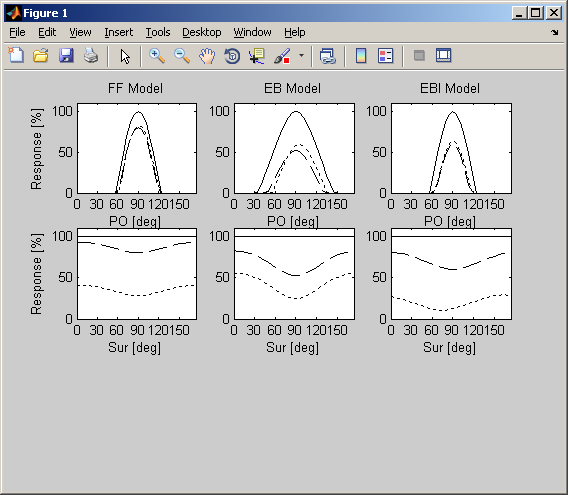

Using these Matlab scripts, you can run the simulations of the model and you can generate the figures showing the predicted surround surpression for varying surround orientations. 1) Start Matlab 2) Navigate to the folder 'SimpleHypercolumnModel' 3) Execute the script 'main.m' After a minute you should see a figure like the below:  The scripts shall be self-explanatory. In case of questions or comments, please don't hesitate to contact me (lars.schwabe@uni-rostock.de). If you use this code in your work and/or base any further development on it, please give credit by citing our corresponding joint experimental-modeling work: Strong recurrent networks compute the orientation tuning of surround modulation in the primate primary visual cortex. Shushruth S, Mangapathy P, Ichida JM, Bressloff PC, Schwabe L, Angelucci A. J Neurosci. 2012 Jan 4;32(1):308-21. PMID: 22219292